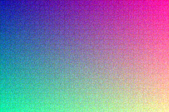

Information par la couleur seule
Un texte de paragraphe avec un lien presque noir dans la phrase.
Un texte de paragraphe avec un lien rouge sans repère dans la phrase.
Un texte de paragraphe avec un lien souligné au survol dans la phrase.
Un texte de paragraphe avec un lien toujours souligné dans la phrase.
Les champs obligatoires sont indiqués en rouge.
Le dossier est urgent pour la fin du mois.
Salle réservée
| Mairie annexe | Annulé |
